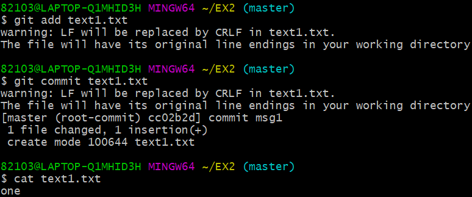
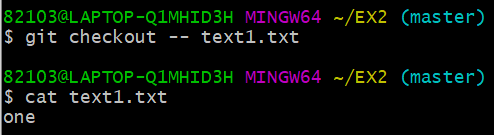
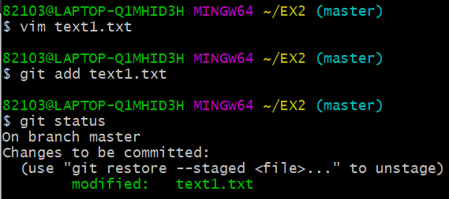
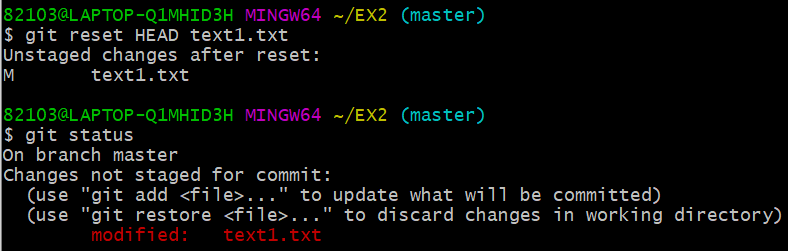
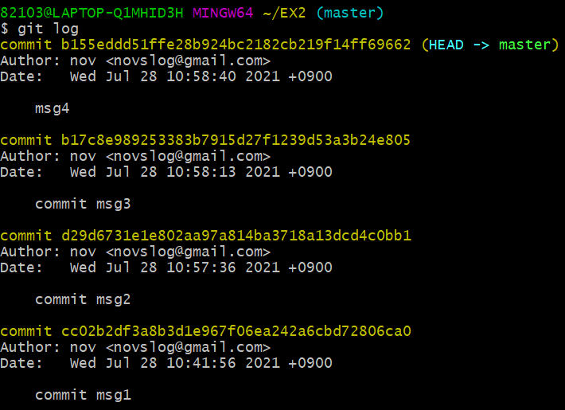
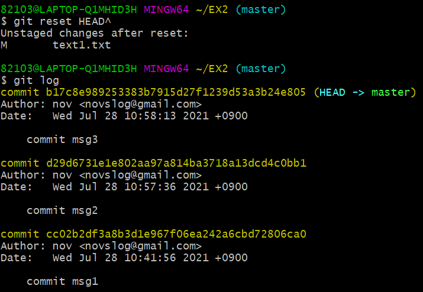
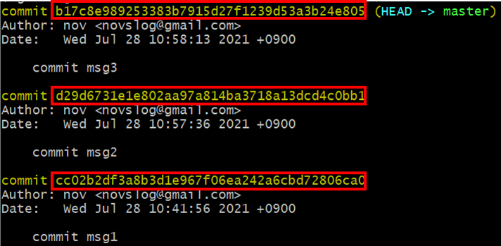
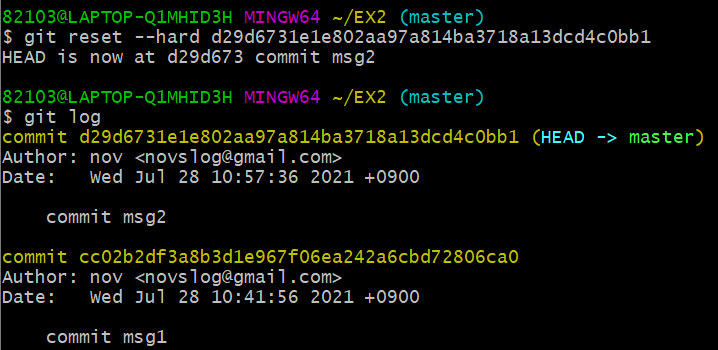
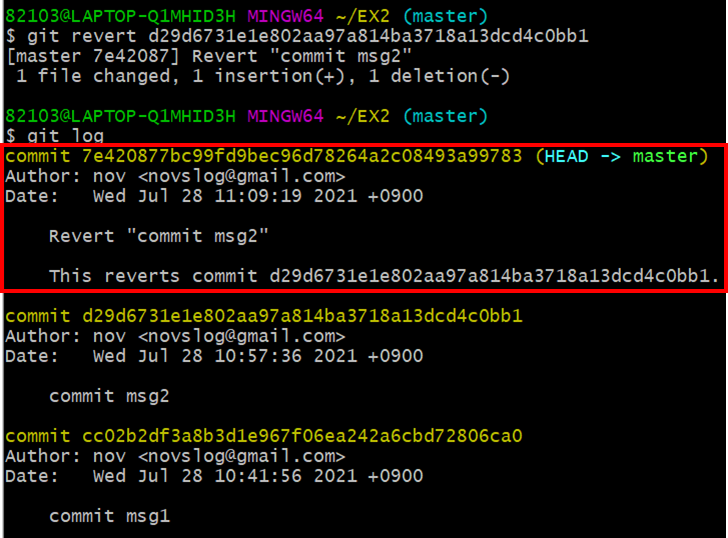

* 다음 포스팅은 깃(Git)의 사용방법에 대하여 정리한 것으로, 개인적인 공부 기록용으로 작성한 글 이기에 잘못된 내용을 포함하고 있을 수 있습니다.
* Window 운영체제를 기준으로 작성했습니다.
[목차]
#1 수정한 파일 되돌리기 : git checkout -- 파일이름
#2 스테이징 되돌리기 : git reset HEAD 파일이름
#3 커밋 되돌리기 : git reset HEAD^ , git reset --hard 커밋 해시 , git revert
#3.1 최신 커밋 취소하기 : git reset HEAD^
#3.2 특정한 커밋으로 되돌리기 : git reset --hard 커밋 해시
#3.3 삭제하지 않고 커밋 되돌리기 : git revert 커밋해시
#1 수정한 파일 되돌리기 : git checkout -- 파일이름
작업 트리에 존재하는 파일의 수정한 내용을 checkout 명령어를 사용하면 손쉽게 취소할 수 있다.
우선, text1.txt 파일을 생성해 주고 "one" 을 입력했다. 그리고 스테이징 & 커밋을 수행했다. (깃이 text1.txt 파일을 추적하도록 하기 위해서는 먼저 저장소에 저장하여야 하기 때문이다.)
$ vim text1.txt // "one" 입력
$ git add text1.txt
$ git commit
$ cat text1.txt // 내용 확인
vim 편집기를 이용해 text1.txt 파일의 내용을 "one"에서 "1"로 변경한다.
$ vim text1.txt // "one" -> "1"다음으로, "git checkout -- 파일이름" 명령어를 입력한다.

cat 명령으로 text1.txt 파일의 내용을 확인해 보니 다시 원래 내용으로 돌아갔다.
이처럼, git checkout -- 명령어를 사용하면 수정한 파일의 내용을 원래 대로 복원할 수 있다. (* 단, checkout으로 되돌린 내용은 다시 복구할 수 없으니 사용에 유의해야 한다.
#2 스테이징 되돌리기 : git reset HEAD 파일이름
스테이징을 취소하는 명령에 대해서 알아 보도록 하자.
vim 편집기로 text1.txt 파일의 내용을 "1"로 변경하고, add 명령으로 스테이징을 수행하고 상태를 확인한다.
$ vim text1.txt // "one" -> "1"
$ git add text1.txt // 스테이징
$ git status // 상태확인"Changes to be commited" 즉, staged 상태임을 확인할 수 있다.

다음 명령을 입력하고 다시 상태를 확인해 보자.
$ git reset HEAD text1.txt // 스테이징 취소
$ git status // 상태확인스테이징이 취소되었다는 메시지 "Unstaged changes after reset" 가 출력되고, 상태를 확인해 보니 다시 작업트리로 돌아 갔음을 확인할 수 있다.

이처럼 "git reset HEAD 파일이름" 명령을 사용하면 스테이징을 취소할 수 있다.
#3 커밋 되돌리기 : git reset HEAD^ , git reset --hard 커밋 해시 , git revert
다음으로 커밋을 되돌리는 방법에 대해서 알아보자. 우선, 테스트를 위해 버전 4개를 만들어 주었다.

#3.1 최신 커밋 취소하기 : git reset HEAD^
가장 마지막으로 한 커밋을 취소하는 명령어는 "git reset HEAD^" 이다. 다음 명령을 실행하고 로그를 출력해 보자.
$ git reset HEAD^
$ git log // 버전 로그 출력가장 최신 버전 하나가 삭제되었다.

3.2 특정한 커밋으로 되돌리기 : git reset --hard 커밋 해시
지정한 커밋으로 되돌리고, 그 이후의 버전을 모두 삭제하는 명령어는 git reset --hard 커밋 해시이다.
여기서 "커밋 해시"란, git log 명령어로 버전을 출력하면 보이는 commit 옆에 보이는 긴 문자열인데 , 커밋을 구분해 주는 역할을 한다.
되돌리고자 하는 버전의 커밋해시를 미리 복사해 두어야 한다. 필자는 2번째 버전으로 되돌릴 것이니, 2번째 버전의 커밋 해시를 복사해 두었다.

$ git reset --hard d29d6731e1e802aa97a814ba3718a13dcd4c0bb1(복사한 커밋 해시)2번째 버전으로 되돌리고, 그 이후의 버전 (버전 3) 는 삭제 되었다.

#3.3 삭제하지 않고 커밋 되돌리기 : git revert 커밋해시
되돌리고자 하는 버전 이후의 버전들을 삭제하지 않고 되돌리기 위해서는 reset 명령이 아닌 revert 명령이 필요하다.
단, revert 명령은 reset 명령과 달리 취소하고자 하는 버전의 커밋 해시를 지정해야 한다. 필자는 2번째 버전을 취소할 에정이니, 2번째 버전의 커밋 해시를 복사해 두었다.
$ git revert 복사한 커밋 해시
$ git log
버전2를 revert한 새로운 커밋이 생성되었다. 버전2를 삭제하는 대신 버전2에서 변경한 이력을 취소한 새로운 버전을 생성한 것이다.